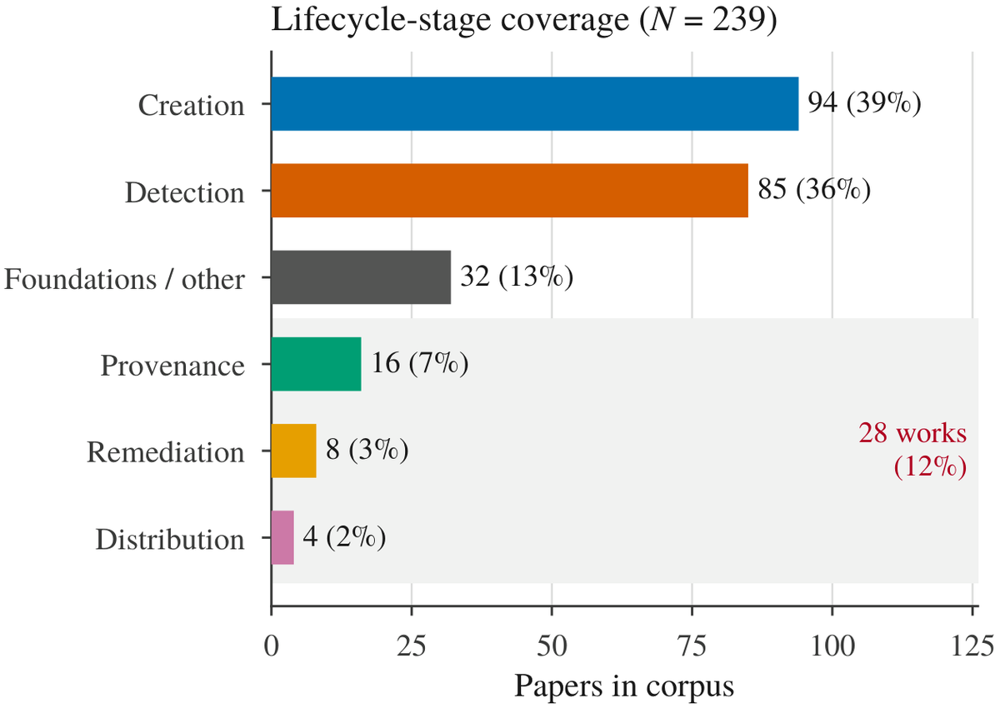
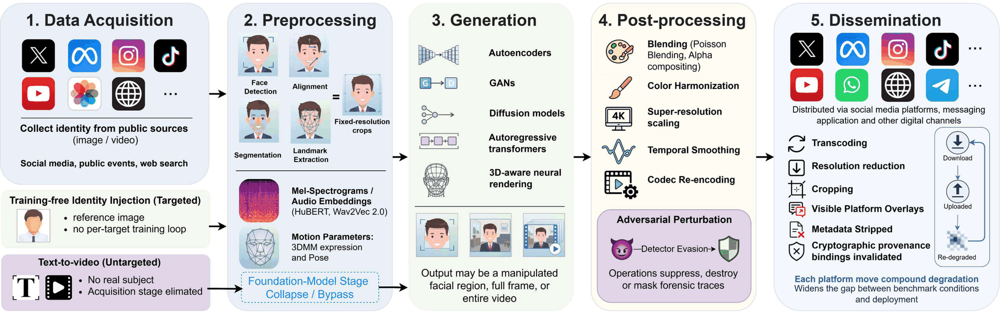

All 212 references, grouped by year and by the role each plays in the survey, are on GitHub.
A Survey of Forensics, Generation and Distribution Across Social Media Lifecycle
Deepfake detection is usually measured on curated benchmarks, yet synthetic video often reaches audiences through social-media platforms that compress, resize, re-encode, crop, and repost it before downstream detection. The practical question is therefore not whether a detector separates real from fake under laboratory conditions, but whether the evidence it depends on still exists at the moment a decision must be made. This survey reviews 212 works on generative audio-video deepfakes across the full lifecycle of creation, platform distribution, detection, provenance, and remediation. We organize the review around five forensic assumptions that detectors implicitly rely on: that a manipulated region leaves a boundary, that a generator leaves a stable fingerprint, that test data resemble training data, that forensic signals survive processing, and that low-level clues are sufficient. Using these assumptions as a common lens, we present an evidence-based taxonomy of generation methods, review signal-driven, learning-based, reasoning-based, agentic, and adversarially robust detection, and examine provenance mechanisms including content credentials and watermarking alongside emerging disclosure and takedown regulation. Two findings recur. First, foundation-model generation can weaken several assumptions at once, since fully synthetic and jointly generated audio-video content may remove compositing boundaries and reduce exploitable cross-modal inconsistencies. Second, the literature is concentrated on creation and detection, with distribution, provenance, and remediation together accounting for 13% of the corpus. We close with evaluation protocols that report which assumptions a benchmark actually exercises.
A manipulated region leaves a boundary. Fails for fully synthetic video.
A generator leaves a stable fingerprint. Fails across versions and chained generators.
Test videos resemble the training data. Fails on unseen generators and domains.
Forensic signals survive processing. Fails under platform compression and re-encoding.
Low-level clues are enough. Fails when audio and video are generated jointly.

The stages that determine what evidence survives to a detector are among the least studied.

The deepfake pipeline, from data acquisition to dissemination. Every stage adds, alters, or suppresses forensic traces.
All 212 references, grouped by year and by the role each plays in the survey, are on GitHub.
@article{raza2026deepfakes,
title = {Deepfakes in the Foundation-Model Era: A Survey of
Forensics, Generation and Distribution Across
Social Media Lifecycle},
author = {Raza, Shaina and Ho, Jessee and Radwan, Ahmed Y. and
Hafez, Mohamed},
journal = {ACM Computing Surveys},
year = {2026},
note = {Under review}
}